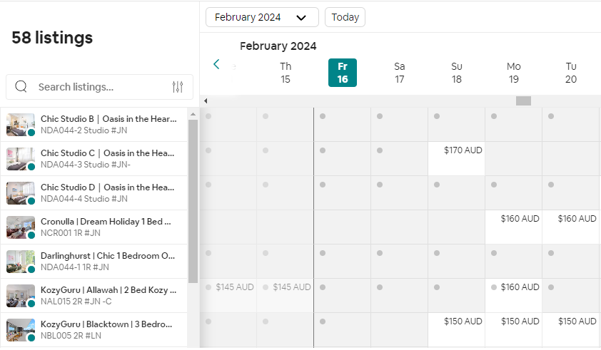

Manage your bookings, rates, and availability in one easy-to-see calendar. All the listings at a glance!

Make your own rules
Set pricing for weekdays and weekends to maximize your income. Choose relative pricing and change by percentage. Get an overview of the minimum stay for each date on the calendar and keep track of important details. Ensure your team is up to date with internal notes. They’re your properties. You make the rules.